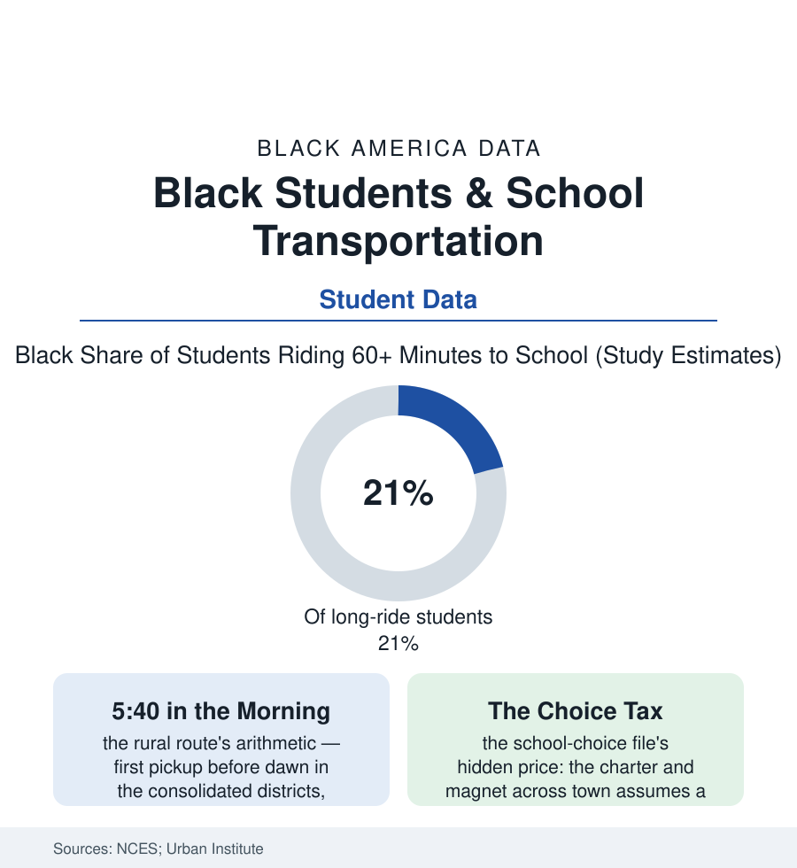

Black Education
The Long Ride: School Transportation and the Hours Black Students Spend Getting There
The yellow bus is education's uncounted hours: ride lengths, early pickups, and transit deserts shape the school day long before the bell. The transportation file.

Before a single lesson, the school day has already sorted its students by a variable no transcript records: how long it took to get there. For the roughly half of American students who ride a bus — and the millions more carried, walked, and transit-routed — the commute is the education system's shadow curriculum, and the transportation data show its hours falling unevenly, with Black students overrepresented on the longest rides in the nation. This article reads the transportation file.
The Geography of the Ride
The long ride has two homelands in the data, and Black students are concentrated in both: the rural consolidated district (the school-closure file's legacy — the county that closed the community schools and bought buses, its routes winding for ninety minutes through the Black Belt's and the Delta's countrysides, the first pickup in the dark of a winter morning, the child arriving having already spent a class period's worth of day in transit — the fatigue and breakfast-skipping rows in the school-health data carrying the route map inside them) and the urban choice landscape (the district whose neighborhood school the funding file starved, whose families scatter each morning to the charters and magnets and transfers of the choice file — rides assembled from city buses and long walks through the transit data's least-served corridors, the transfer student's commute running two and three times the neighborhood child's in the Urban Institute's city studies). Between them sits the system's most honest statistic, the mode table itself: who walks (and the Safe Routes research's account of the sidewalks that don't exist in the neighborhoods where walking is necessity, not lifestyle), who is driven (the car-access file's households and the maternal labor of the morning run), and who rides the yellow bus — the fleet whose driver shortage of the recent years hit the long rural and urban routes first in the district reports, the cancelled routes' notices landing in the same zip codes as every other shortage in this atlas.
What the Hours Cost and Buy
The research prices the ride in the currencies schools keep: the sleep file's minutes (the early-pickup child's truncated night compounding the adolescent sleep data's already-short rows — the transportation and start-time literatures meeting at the 5:40 alarm), the breakfast program's reach (the long-route child arriving after the cafeteria's window in the participation data), the extracurricular file's gate (the activity bus that doesn't exist stranding the bused child from the team, the club, the tutoring the choice brochure advertised — participation gaps in the survey data tracking the ride home's availability as faithfully as they track talent or interest), and the discipline file's first entry of the day (the bus itself — the least supervised space in the system — generating its referrals in the CRDC rows, the ride as the day's first test of the code). The busing word itself carries the history the data must hold carefully: the desegregation era's buses, ordered to carry children across the lines the residence maps drew, fell as policy overwhelmingly on Black children (the one-way busing of the historical record — Black schools closed, Black children routed — the asymmetry the transportation historians document and the Black Belt's grandmothers recite from memory: the burden of integration was transported, daily, at dawn, in one direction). The modern reform rows are practical where they exist: the districts buying transit passes for their high-schoolers (the ridership and attendance gains in the evaluating cities' data), the route-optimization and bell-time coordinations, the choice programs required, at last, to publish the ride with the brochure. The file's principle is the section's refrain in a new key: access is not the offer; access is the offer plus the way there.
Reading the Transportation Data
Nobody's transcript lists the commute, and everybody's education contains it — the hours on the bus are the school day's ungraded first and last periods, assigned by geography with a racial distribution the route maps make plain. The transportation tables are published without ceremony by the statistical agencies. They are, read properly, a schedule of who starts the day already tired, and who was driven.
More in Black Education
Black Educational Attainment: High School Parity, the College Gap
About 89 percent of Black adults hold a high school diploma and one in four holds a bachelor's degree or higher — the attainment ladder, the college completion gap, and the generational trend.
Historically Black Colleges and Universities: Enrollment and Degrees
More than 100 HBCUs enroll roughly 290,000 students and award about one in six Black bachelor's degrees — an outsized share from a small sector. The federal education data.
Black College Enrollment: 2.4 Million Students
About 2.4 million Black students are enrolled in American colleges — nearly two-thirds of them women. The NCES enrollment data by sector, level, and trend.
Source: National Center for Education Statistics transportation data; U.S. Department of Transportation Safe Routes research; Brookings and Urban Institute school commute studies.